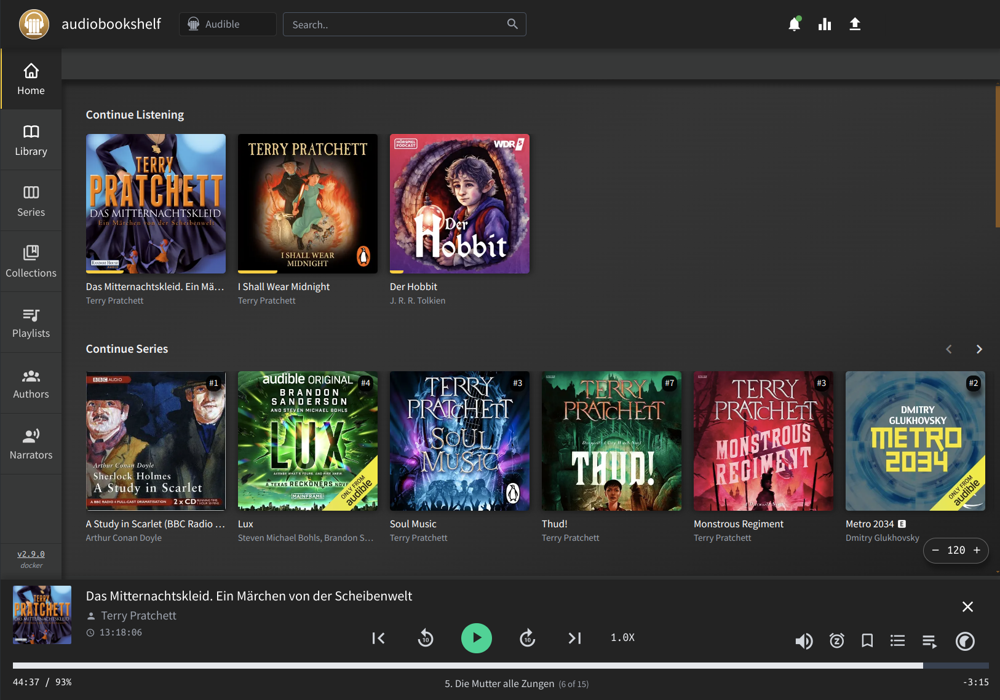
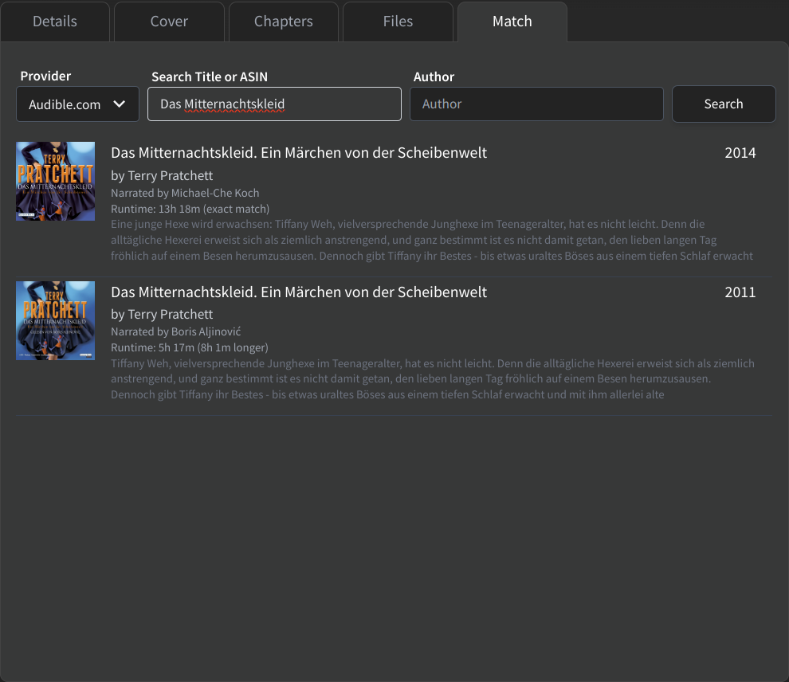
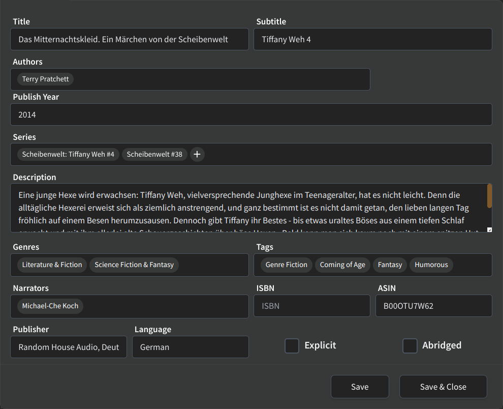
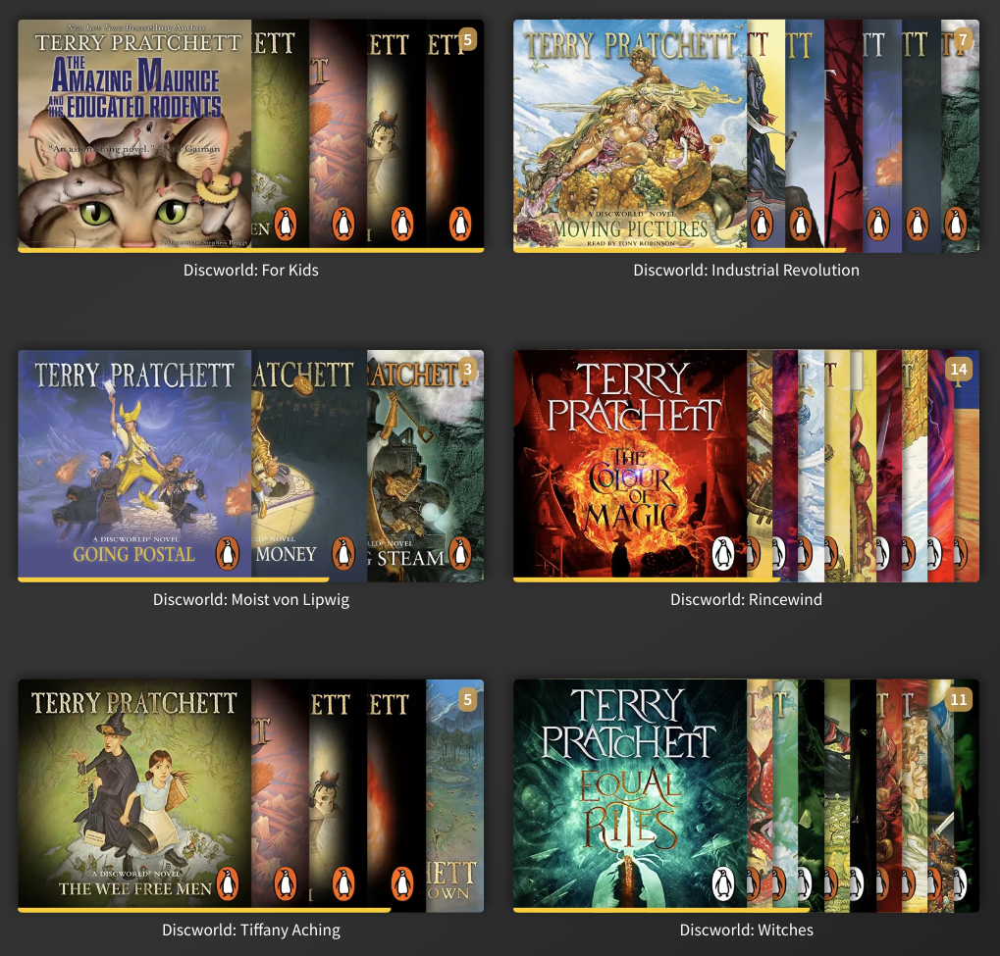
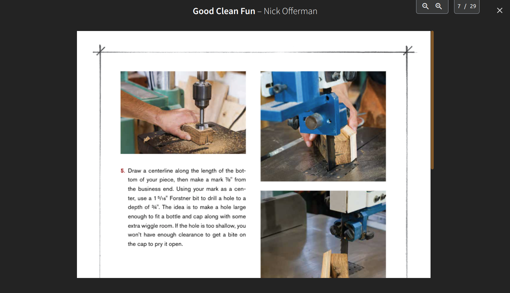
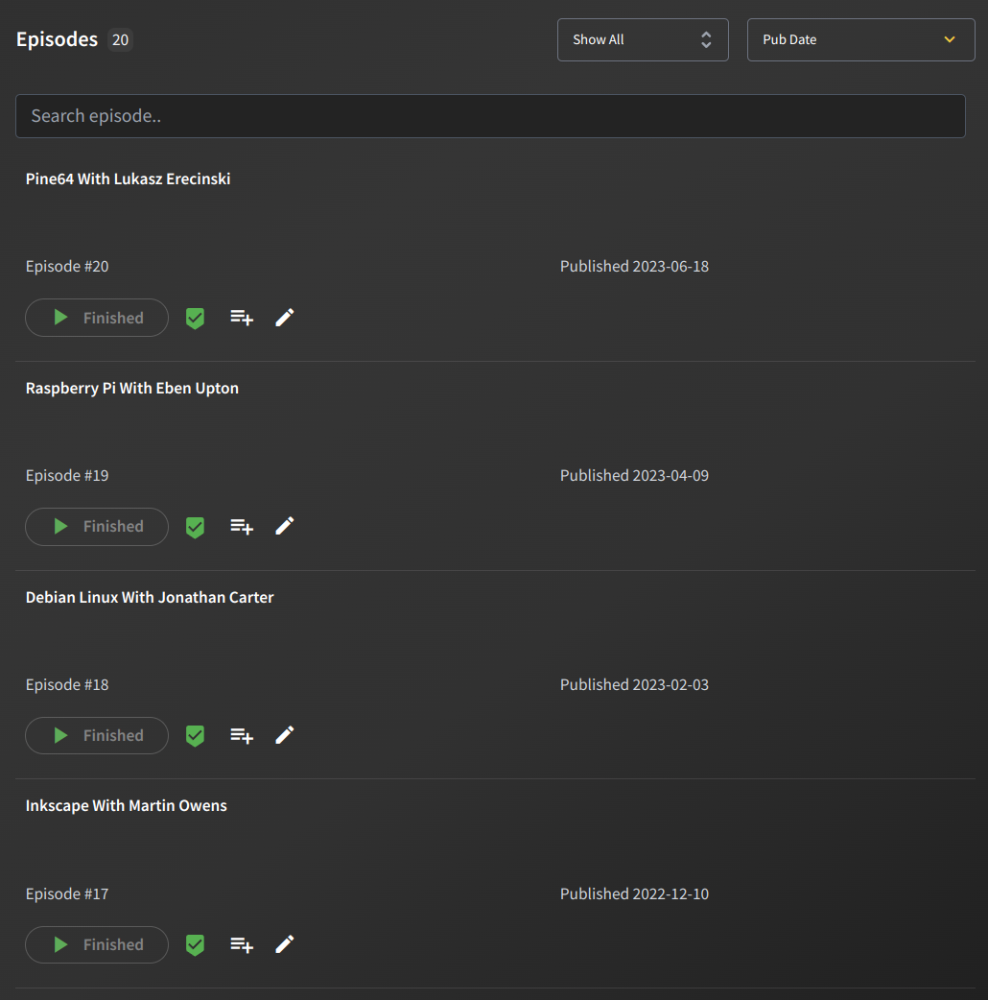
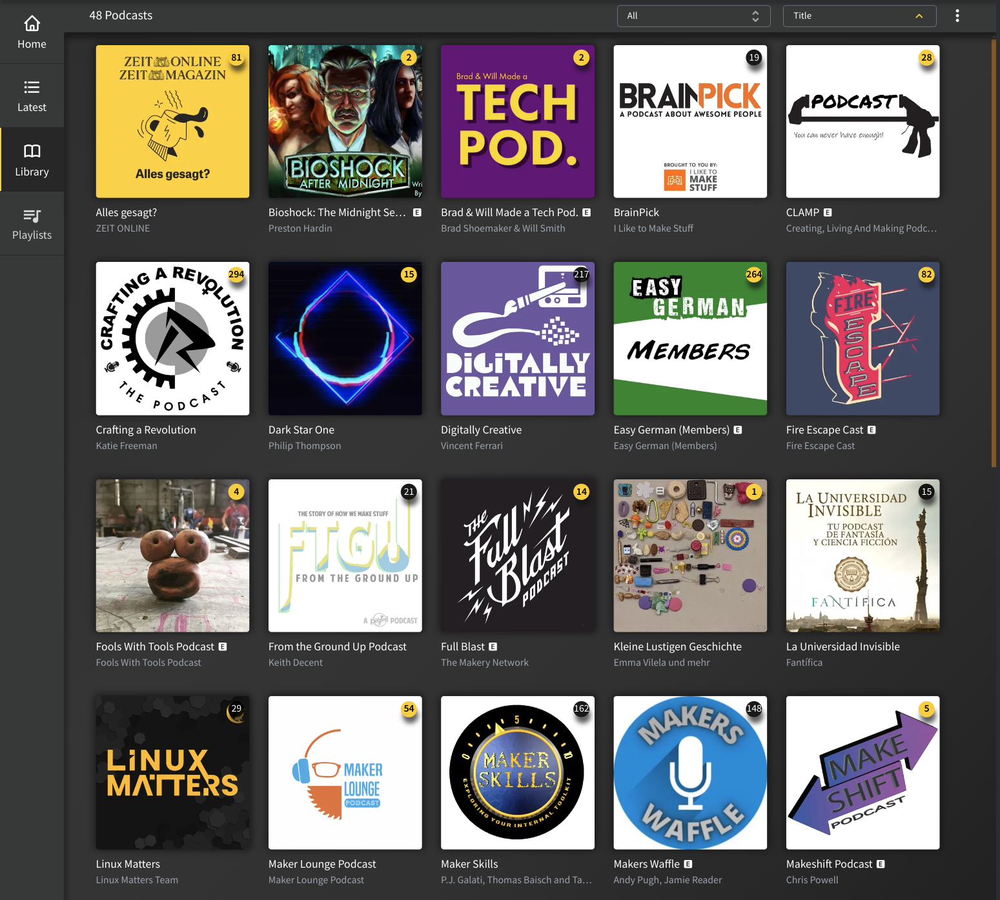
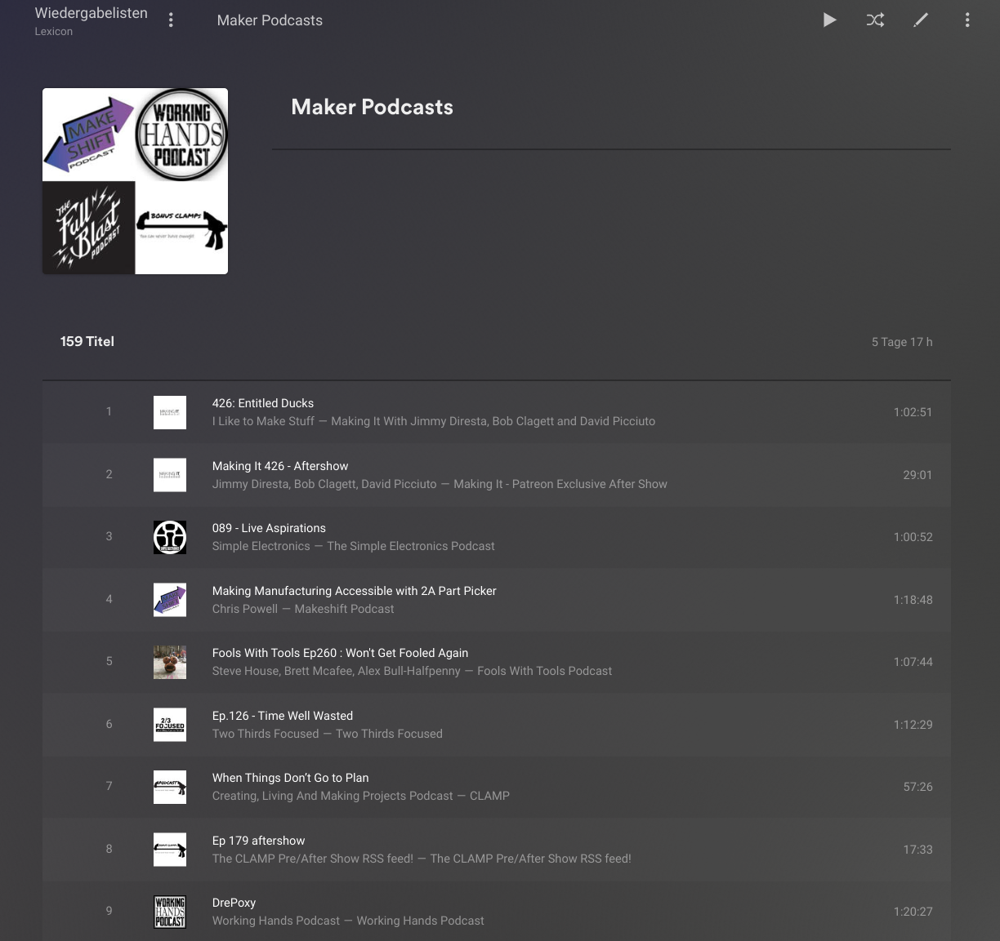

Audiobookshelf on Kubernetes
Migrating a Plex Media Server to Kubernetes, was a significant improvement for the maintenance of the Plex Media Server I use to listen to podcasts and audiobooks, to keep me company while I play games, but after all these years Plex remains a very insufficient and deficient application for audiobooks.
Enter audiobookshelf (because Emby and Jellyfin are also not great)

Installation on Kubernetes
Audiobookshelf
configuration
requires writeable directories mounted at
/config and /metadata for database, cache, etc.
# useradd -d /home/k8s/audiobookshelf -s /usr/sbin/nologin audiobookshelf
# mkdir /home/k8s/audiobookshelf/config /home/k8s/audiobookshelf/metadata
# chown -R audiobookshelf.audiobookshelf /home/k8s/audiobookshelf
# ls -dln /home/k8s/audiobookshelf/
drwxr-xr-x 1 1006 1006 28 Feb 27 22:47 /home/k8s/audiobookshelf/
Note the UID/GID (1006) to be used in the Kubernetes
deployment securityContext later.
Docker Compose suggests mounting audiobooks and podcasts as separate volumes, so the following Kubernetes deployment will do so, even though it would also work to have it all under a single volume.
Create the following audiobookshelf.yaml and deploy
it:
$ kubectl apply -f audiobookshelf.yaml
namespace/audiobookshelf created
persistentvolume/audiobookshelf-pv-config created
persistentvolume/audiobookshelf-pv-metadata created
persistentvolume/audiobookshelf-pv-audiobooks created
persistentvolume/audiobookshelf-pv-podcasts created
persistentvolumeclaim/audiobookshelf-pvc-config created
persistentvolumeclaim/audiobookshelf-pvc-metadata created
persistentvolumeclaim/audiobookshelf-pvc-audiobooks created
persistentvolumeclaim/audiobookshelf-pvc-podcasts created
deployment.apps/audiobookshelf created
service/audiobookshelf created
ingress.networking.k8s.io/audiobookshelf-ingress created
$ kubectl -n audiobookshelf get service
NAME TYPE CLUSTER-IP EXTERNAL-IP PORT(S) AGE
audiobookshelf NodePort 10.102.115.191 <none> 13378:31378/TCP 20s
cm-acme-http-solver-jh67q NodePort 10.106.142.67 <none> 8089:30126/TCP 2m39s
$ kubectl -n audiobookshelf describe ingress audiobookshelf-ingress
Name: audiobookshelf-ingress
Labels: <none>
Namespace: audiobookshelf
Address:
Ingress Class: nginx
Default backend: <default>
TLS:
tls-secret terminates aus.ssl.uu.am
Rules:
Host Path Backends
---- ---- --------
aus.ssl.uu.am
/ audiobookshelf:31378 (10.244.0.202:13378)
Annotations: acme.cert-manager.io/http01-edit-in-place: true
cert-manager.io/cluster-issuer: letsencrypt-prod
cert-manager.io/issue-temporary-certificate: true
Events:
Type Reason Age From Message
---- ------ ---- ---- -------
Normal Sync 26s nginx-ingress-controller Scheduled for sync
Normal CreateCertificate 26s cert-manager-ingress-shim Successfully created Certificate "tls-secret"
The server is now available at http://192.168.0.6:31378
NGinx should also make it available at https://aus.ssl.uu.am
Deployment
apiVersion: v1
kind: Namespace
metadata:
name: audiobookshelf
---
apiVersion: v1
kind: PersistentVolume
metadata:
name: audiobookshelf-pv-config
namespace: audiobookshelf
spec:
storageClassName: manual
capacity:
storage: 1Gi
accessModes:
- ReadWriteOnce
persistentVolumeReclaimPolicy: Retain
hostPath:
path: /home/k8s/audiobookshelf/config
---
apiVersion: v1
kind: PersistentVolume
metadata:
name: audiobookshelf-pv-metadata
namespace: audiobookshelf
spec:
storageClassName: manual
capacity:
storage: 1Gi
accessModes:
- ReadWriteOnce
persistentVolumeReclaimPolicy: Retain
hostPath:
path: /home/k8s/audiobookshelf/metadata
---
apiVersion: v1
kind: PersistentVolume
metadata:
name: audiobookshelf-pv-audiobooks
namespace: audiobookshelf
spec:
storageClassName: manual
capacity:
storage: 1Gi
accessModes:
- ReadWriteOnce
persistentVolumeReclaimPolicy: Retain
hostPath:
path: /home/depot/audio/Audiobooks
---
apiVersion: v1
kind: PersistentVolume
metadata:
name: audiobookshelf-pv-podcasts
namespace: audiobookshelf
spec:
storageClassName: manual
capacity:
storage: 1Gi
accessModes:
- ReadWriteOnce
persistentVolumeReclaimPolicy: Retain
hostPath:
path: /home/depot/audio/Podcasts
---
apiVersion: v1
kind: PersistentVolumeClaim
metadata:
name: audiobookshelf-pvc-config
namespace: audiobookshelf
spec:
storageClassName: manual
volumeName: audiobookshelf-pv-config
accessModes:
- ReadWriteOnce
volumeMode: Filesystem
resources:
requests:
storage: 1Gi
---
apiVersion: v1
kind: PersistentVolumeClaim
metadata:
name: audiobookshelf-pvc-metadata
namespace: audiobookshelf
spec:
storageClassName: manual
volumeName: audiobookshelf-pv-metadata
accessModes:
- ReadWriteOnce
volumeMode: Filesystem
resources:
requests:
storage: 1Gi
---
apiVersion: v1
kind: PersistentVolumeClaim
metadata:
name: audiobookshelf-pvc-audiobooks
namespace: audiobookshelf
spec:
storageClassName: manual
volumeName: audiobookshelf-pv-audiobooks
accessModes:
- ReadWriteOnce
volumeMode: Filesystem
resources:
requests:
storage: 1Gi
---
apiVersion: v1
kind: PersistentVolumeClaim
metadata:
name: audiobookshelf-pvc-podcasts
namespace: audiobookshelf
spec:
storageClassName: manual
volumeName: audiobookshelf-pv-podcasts
accessModes:
- ReadWriteOnce
volumeMode: Filesystem
resources:
requests:
storage: 1Gi
---
apiVersion: apps/v1
kind: Deployment
metadata:
labels:
app: audiobookshelf
name: audiobookshelf
namespace: audiobookshelf
spec:
replicas: 1
revisionHistoryLimit: 0
selector:
matchLabels:
app: audiobookshelf
strategy:
rollingUpdate:
maxSurge: 0
maxUnavailable: 1
type: RollingUpdate
template:
metadata:
labels:
app: audiobookshelf
spec:
containers:
- image: ghcr.io/advplyr/audiobookshelf:latest
imagePullPolicy: Always
name: audiobookshelf
env:
- name: PORT
value: "13378"
ports:
- containerPort: 13378
resources: {}
stdin: true
tty: true
volumeMounts:
- mountPath: /config
name: audiobookshelf-config
- mountPath: /metadata
name: audiobookshelf-metadata
- mountPath: /audiobooks
name: audiobookshelf-audiobooks
- mountPath: /podcasts
name: audiobookshelf-podcasts
securityContext:
allowPrivilegeEscalation: false
runAsUser: 1006
runAsGroup: 1006
restartPolicy: Always
volumes:
- name: audiobookshelf-config
persistentVolumeClaim:
claimName: audiobookshelf-pvc-config
- name: audiobookshelf-metadata
persistentVolumeClaim:
claimName: audiobookshelf-pvc-metadata
- name: audiobookshelf-audiobooks
persistentVolumeClaim:
claimName: audiobookshelf-pvc-audiobooks
- name: audiobookshelf-podcasts
persistentVolumeClaim:
claimName: audiobookshelf-pvc-podcasts
---
kind: Service
apiVersion: v1
metadata:
name: audiobookshelf-svc
namespace: audiobookshelf
spec:
type: NodePort
ports:
- port: 13388
nodePort: 31378
targetPort: 13378
selector:
app: audiobookshelf
---
apiVersion: networking.k8s.io/v1
kind: Ingress
metadata:
name: audiobookshelf-ingress
namespace: audiobookshelf
annotations:
acme.cert-manager.io/http01-edit-in-place: "true"
cert-manager.io/issue-temporary-certificate: "true"
cert-manager.io/cluster-issuer: letsencrypt-prod
nginx.ingress.kubernetes.io/websocket-services: audiobookshelf-svc
spec:
ingressClassName: nginx
rules:
- host: abs.ssl.uu.am
http:
paths:
- path: /
pathType: Prefix
backend:
service:
name: audiobookshelf-svc
port:
number: 13378
tls:
- secretName: tls-secret
hosts:
- abs.ssl.uu.am
The above deployment is based on audiobookshelf Docker documentation and Audiobookshelf Helm Chart By TrueCharts.
Troubleshooting
Contrary to what
Configuration
would suggest, the server will by default try to listen on port 80.
To override this the env variable PORT must be set:
Otherwise, when running as a non-privileged user, this will cause it to crash-loop:
$ kubectl get all -n audiobookshelf
NAME READY STATUS RESTARTS AGE
pod/audiobookshelf-754d55cd68-z4br6 0/1 CrashLoopBackOff 4 (59s ago) 3m9s
NAME TYPE CLUSTER-IP EXTERNAL-IP PORT(S) AGE
service/audiobookshelf-tcp NodePort 10.97.42.11 <none> 13378:32164/TCP 10m
NAME READY UP-TO-DATE AVAILABLE AGE
deployment.apps/audiobookshelf 0/1 1 0 3m9s
NAME DESIRED CURRENT READY AGE
replicaset.apps/audiobookshelf-754d55cd68 1 1 0 3m9s
$ kubectl -n audiobookshelf describe pod audiobookshelf-754d55cd68-z4br6
Events:
Type Reason Age From Message
---- ------ ---- ---- -------
Normal Scheduled 5m56s default-scheduler Successfully assigned audiobookshelf/audiobookshelf-754d55cd68-z4br6 to lexicon
Normal Pulled 5m29s kubelet Successfully pulled image "ghcr.io/advplyr/audiobookshelf:latest" in 25.769s (25.769s including waiting)
Normal Pulled 5m26s kubelet Successfully pulled image "ghcr.io/advplyr/audiobookshelf:latest" in 661ms (661ms including waiting)
Normal Pulled 5m9s kubelet Successfully pulled image "ghcr.io/advplyr/audiobookshelf:latest" in 659ms (659ms including waiting)
Normal Created 4m39s (x4 over 5m29s) kubelet Created container audiobookshelf
Normal Started 4m39s (x4 over 5m29s) kubelet Started container audiobookshelf
Normal Pulled 4m39s kubelet Successfully pulled image "ghcr.io/advplyr/audiobookshelf:latest" in 752ms (752ms including waiting)
Normal Pulling 3m48s (x5 over 5m55s) kubelet Pulling image "ghcr.io/advplyr/audiobookshelf:latest"
Normal Pulled 3m47s kubelet Successfully pulled image "ghcr.io/advplyr/audiobookshelf:latest" in 634ms (634ms including waiting)
Warning BackOff 47s (x22 over 5m25s) kubelet Back-off restarting failed container audiobookshelf in pod audiobookshelf-754d55cd68-z4br6_audiobookshelf(147c22bc-5f0b-4ed8-a881-478748234776)
$ kubectl -n audiobookshelf logs audiobookshelf-754d55cd68-z4br6
Config /config /metadata
[2024-02-27 22:29:14.925] INFO: === Starting Server ===
[2024-02-27 22:29:14.939] INFO: [Server] Init v2.8.0
[2024-02-27 22:29:14.967] INFO: [Database] Initializing db at "/config/absdatabase.sqlite"
[2024-02-27 22:29:14.998] INFO: [Database] Db connection was successful
[2024-02-27 22:29:15.065] INFO: [Database] Db initialized with models: user, library, libraryFolder, book, podcast, podcastEpisode, libraryItem, mediaProgress, series, bookSeries, author, bookAuthor, collection, collectionBook, playlist, playlistMediaItem, device, playbackSession, feed, feedEpisode, setting, customMetadataProvider
[2024-02-27 22:29:15.080] INFO: [LogManager] Init current daily log filename: 2024-02-27.txt
[2024-02-27 22:29:15.084] INFO: [BackupManager] 0 Backups Found
[2024-02-27 22:29:15.085] INFO: [BackupManager] Auto Backups are disabled
Warning: connect.session() MemoryStore is not
designed for a production environment, as it will leak
memory, and will not scale past a single process.
[2024-02-27 22:29:15.095] FATAL: [Server] Uncaught exception origin: uncaughtException, error: Error: listen EACCES: permission denied 0.0.0.0:80
at Server.setupListenHandle [as _listen2] (node:net:1855:21)
at listenInCluster (node:net:1920:12)
at Server.listen (node:net:2008:7)
at Server.start (/server/Server.js:319:17) {
code: 'EACCES',
errno: -13,
syscall: 'listen',
address: '0.0.0.0',
port: 80
} (Server.js:160)
node:events:496
throw er; // Unhandled 'error' event
^
Error: listen EACCES: permission denied 0.0.0.0:80
at Server.setupListenHandle [as _listen2] (node:net:1855:21)
at listenInCluster (node:net:1920:12)
at Server.listen (node:net:2008:7)
at Server.start (/server/Server.js:319:17)
Emitted 'error' event on Server instance at:
at emitErrorNT (node:net:1899:8)
at process.processTicksAndRejections (node:internal/process/task_queues:82:21) {
code: 'EACCES',
errno: -13,
syscall: 'listen',
address: '0.0.0.0',
port: 80
}
Node.js v20.11.1
Configuration
Once the service is running, accessing the web interface allows
creating the first (root) user. Additional users can (and should)
be created, so they can each have their own progress saved throughout
books and podcatss. Users can also have access to different sets of
libraries, although by default they will have access to all libraries.
Mobile app
To complete the self-hosted audiobook service, there is also the mobile app advplyr/audiobookshelf-app.
Audiobookshelf Android app can easily be installed from Google Play directly. The iOS app cannot simply be installed, because Apple has a hard limit of 10k beta testers.
Better Features
There is a lot in Audiobookshelf that is better, or much better, than in Plex:
- Saving the progress through books and podcats, per user.
- Podcats with a separate feed for pre/after show are somehow corrected merged together.
- REST API that may allow implementing some of the missing features below.
Matching Metadata
One of my favorite features of audiobookshelf is the ability to fetch book metadata and thus more clearly tell different versions of a book a part, e.g. abridged vs unabridged:

After selecting one matching book, metadata can be edited or even left out. This is very useful when an exact match cannot be found, but a close enough match can be used to fetch the matching parts of its metadata while at the same time manually editing or adding as needed. After importing metadata, there are further options to add or edit book metadata in the Details tab:

I find it particularly useful to add or edit:
- Explict, because this is seem to never be provided by matching metadata and in any case it can be a matter of opinion.
- Language, if not correctly matched (usually it is).
- Series. A book can have a different places in different series or subseries, and you can create your own series too.
The Series field is interesting to then navigate books by series:

PDF Reader
When there is a PDF file along with audio files, this can be read from the browser by clicking the corresponding icon e.g. this is (half) a page of Nick Offerman's Good Clean Fun:

Podcast Publication Dates
At least when using a separate tool for downloading podcast
episodes, they have have only a year of publication,
from the TYER ID3 frame, so they show up with their release date
being as YYYY-01-01 and they cannot be properly sorted by
release date. This could be fixed by allowing Audiobookshelf
to download RSS feeds directly (have not tried), but also by
updating the separate tool to set the
TDAT and TIME frames.
Once these are set in the MP3 files, audiobookshell will
correctly parse and display them:

Podcast Progress
Just like with Audiobooks, keep track of which podcasts episodes each user has listed to is a central feature. One little detail I really like about how this is done, is the yellow or black circle on the podcast cover indicating whether all episodes have been listed to already (black circle) or otherwise how many are yet to be listened to (yellow circle):

Missing Features
After a few days listening to books and podcasts, a few features turn out to be missing or not working as expected. Most of these are already in the issue tracker:
- Enhancement: Display podcast episode images #1573
- Enhancement: Ability to edit Series similar to tags #1604
- UI: Sort a Series by publication year if no sort sequence number present #1674
- Enhancement Set custom order for podcast library #1792
- Enhancement: Enable Custom datetime in Podcast episode File Name #1869
- Enhancement: More Flexible Library Structure #2208
- Bug: PDF Reader is flickering #2279
- Enhancement: Same book, different narrators #2396
- Enhancement: Display Chapter Art while playing. #2660
audiobookshelf-app * Provide ability to queue audiobooks and podcast episodes #416 * Ability to mark several Podcast episodes by first marking and then dragging down with two fingers in IOS #685
Batch Updates
Not only is progress saved automatically while listening, podcasts
can also be updated to mark episodes are finished. What is missing
here is the ability to select multiple episodes easily and quickly,
for instance with Shift+click the last episode of a range when the
first one is already selected. It would help to even just be able
to mark all episodes as finished, even if only to then mark a few
as unfinished.
Collections
The option to remove books to collections seems to be missing and there doesn't seem to be any way to remove collections at all.
Playlists
Playlists have the same problematic limitations as Collections: no way option to delete them, or remove episodes from them.
This is the one and only thing I still use Plex for. I like to listen to podcasts in by their publication date, especially because I listen to several podcasts that cross-reference and even invite on each other. I have not found a good way to do this with Audiobookshelf, given the no-remove-option limitations, so I'm still using Plex.
